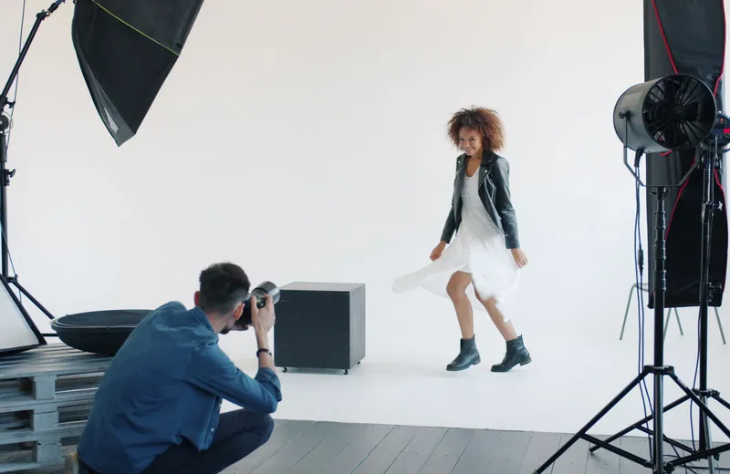
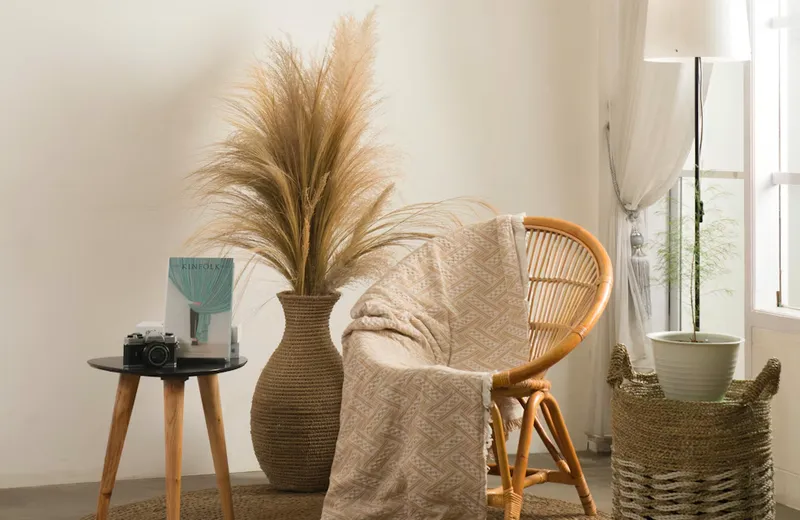
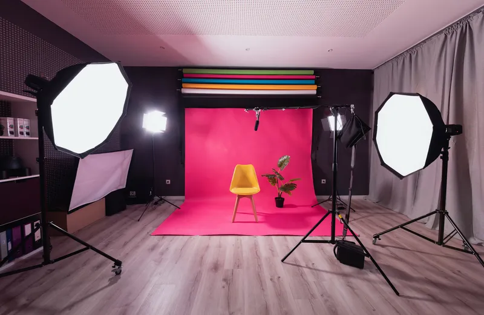

Фотостудия «Светотень» в Туле
Три зала в центре Тулы, в пяти минутах от кремля. Аренда почасово от 1 200 ₽, фотосессии с фотографом, фото на документы за 10 минут.
«Светотень» — фотостудия в Туле на улице Советской, в самом центре города. Мы сдаём залы в аренду фотографам и блогерам, проводим фотосессии со своими фотографами и делаем фото на документы без записи. У нас три зала разного характера, профессиональный свет и гримёрная, поэтому в студии удобно снимать и семейный портрет, и каталог для маркетплейса. Записаться можно онлайн, по телефону или в WhatsApp — администратор подтвердит бронь в течение 15 минут.
Залы фотостудии в центре Тулы
Общая площадь залов — 165 м², высота потолков 3,5 м. Каждый зал можно арендовать отдельно, а для больших съёмок — объединить два зала.



Фото — иллюстративные, из бесплатных фотобанков; реальные снимки залов появятся после открытия студии.
Белый зал с циклорамой
70 м², циклорама 6×4 м и большие окна с дневным светом. Подходит для каталожной, семейной и свадебной съёмки, видео и групповых кадров до 10 человек.
Лофт
55 м², кирпичная стена, диван, зеркала и окно в пол. Тёплый интерьер для парных фотосессий, love story, портретов и съёмки для блога.
Тёмный зал
40 м², чёрные стены для портретов и съёмки в стиле low-key — тёмной контрастной картинки, где свет выхватывает только лицо и силуэт.
Оборудование и свет
В стоимость аренды любого зала уже входит всё необходимое — доплачивать за свет и фоны не нужно:
- импульсный и постоянный LED-свет;
- софтбоксы, октобоксы, стрипбоксы, «тарелка» и отражатели;
- бумажные фоны 2,7 м восьми цветов;
- гримёрная с зеркалом, отпаривателем и Wi-Fi.
Полный список техники — на странице «О студии и оборудование».
Фотосессии в студии с фотографом
Если нужен готовый результат, приходите на фотосессии в студии с нашим фотографом: семейные, детские, для беременных, свадебные, парные и женские. Фотограф поможет с образом и позами, подберёт зал, а обработанные снимки вы получите по ссылке через 5–7 дней. По записи работают визажист и прокат нарядов. Отдельно снимаем деловой портрет и товары для маркетплейсов.
Почему выбирают нашу студию
Центр Тулы
Улица Советская, 5 минут пешком от Тульского кремля и площади Ленина. Рядом остановки транспорта и городская парковка.
Всё включено
Свет, фоны, реквизит и гримёрная входят в цену аренды. Каждый пятый час аренды — в подарок.
Фото на документы без записи
Паспорт, виза, права — снимок за 10 минут, ретушь в подарок, электронный файл для Госуслуг.
Честные правила
Предоплата 30%, бесплатный перенос за 24 часа, цены на сайте совпадают с ценами в студии.
Цены на аренду фотостудии
| Зал | Площадь | Будни, ₽/час | Выходные, ₽/час |
|---|---|---|---|
| Белый зал с циклорамой | 70 м² | 1 500 | 1 800 |
| Лофт | 55 м² | 1 300 | 1 600 |
| Тёмный зал | 40 м² | 1 200 | 1 400 |
Минимальное время — 1 час. По будням до 14:00 скидка 15%. Подробности и бронирование — на странице аренда фотостудии, полный прайс — в разделе «Цены». Среди фотостудий Тулы мы стараемся держать цену ниже средней по центру города.
Популярные направления
Как забронировать зал
- Выберите зал, дату и время в форме онлайн-записи или позвоните.
- Администратор перезвонит и подтвердит свободное время.
- Внесите предоплату 30% — бронь закреплена за вами.
- Перенос или отмена без потери предоплаты — не позднее чем за 24 часа. Все условия — в правилах студии.
Как добраться до студии
Фотостудия в Туле находится по адресу: ул. Советская, д. 47, 3 этаж. От Тульского кремля — 5 минут пешком, ближайшие остановки — «Площадь Ленина» и «Советская улица», для гостей на автомобиле есть городская платная парковка. Работаем ежедневно с 10:00 до 21:00. Схема проезда и карта — на странице «Контакты».
Отзывы
Отзывы о студии мы собираем на Яндекс Картах и в 2ГИС — так их нельзя подделать или удалить. Почитать их и оставить свой можно на странице «Отзывы».
Выберите удобное время — администратор перезвонит в течение 15 минут и подтвердит бронь.
Записаться онлайн +7 (4872) 00-00-00